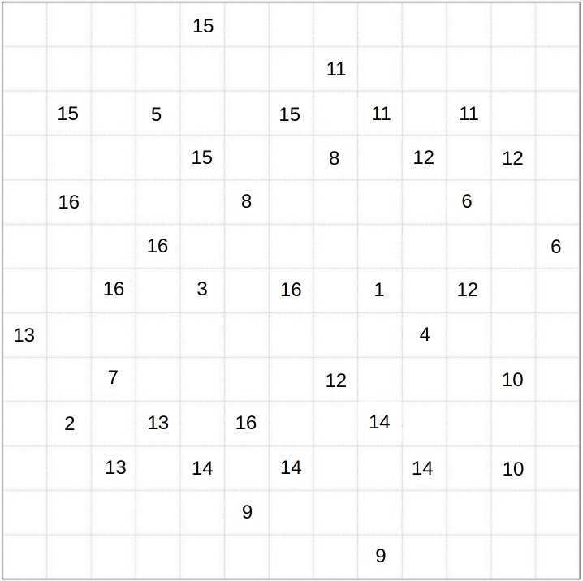
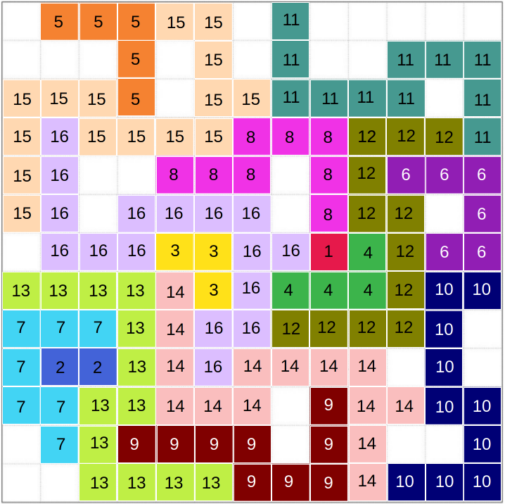

After my victory in last month's Jane Street puzzle, I was determined to solve February's puzzle as fast as possible. Here is its problem statement:
Place positive integers in some of the cells above, so that the grid contains one 1, two 2's, three 3's, and so on, up to $N$ $N$'s. (For some $N\text{.)}$
For any integer $K$ in the grid, the cells labeled $K$ must form an orthogonally connected region (a "$K$-omino"). Furthermore, for each $K > 1$ the $K$-omino must "contain" the shape formed by the ($K-1$)'s. (Rotations and reflections are allowed.)
Some of the cells have been labeled, but unlike our previous Subtiles, we have used variables to obscure those values. (As in the example, at the bottom.)
After completing the grid, compute, in each row, the sum of the labeled cells. The answer to this puzzle is the product of the maximum and minimum row sums.
Usually the puzzles don't release exactly on time each month, but this one must have because it was out at 11:00 AM when I woke up. So I immediately got to work.
The immediate first step was to figure out what $a$, $b$, and $c$ were. Assuming integers, the only possible value for $a$ that worked for the cell $\frac{\sqrt{a + 2}}{a}$ was $2$. Any negative value of $a$ would result in a negative fraction, and any value greater than $2$ would result in a fraction less than $1\text{,}$ which is impossible since the grid only contains positive integers. Plugging in $a = 2$ gave $\frac{\sqrt{4}}{2} = 1$, which is valid.
Since we had the cell $\log_{c} a$, then the only possible value for $c$ that worked with $a = 2$ was $2$ as well. Any value of $c$ greater than $2$ would result in a logarithm less than $1$, which is impossible since the grid only contains positive integers.
But the grid could only contain one $1$, and we had already placed $1$ in cells $\frac{\sqrt{a + 2}}{a}$ and $\log_{c} a$. What did we do wrong?
What was wrong was that we assumed $a$, $b$, and $c$ were integers. The problem statement said nothing about what type of numbers they were! They could be rational, irrational, ... maybe even complex? For now, I assumed they were rational numbers since that seemed most likely.
Going back to the cell $\frac{\sqrt{a + 2}}{a}$, we would need a value for $a$ that isn't an integer. Trying $a = \frac{1}{4}$ gives us $\frac{\sqrt{1/4 + 2}}{1/4} = \frac{\sqrt{9/4}}{1/4} = \frac{3}{2} \cdot 4 = 6$, which was valid! So $a = \frac{1}{4}$.
For cell $\log_{c} a$, we would now need a value for $c$ that isn't an integer. Then $c$ could be $\frac{1}{4}$ or $\frac{1}{2}$, but we could not guess. Looking at the cell $\frac{3 + b^2}{\sqrt{3 + 2c}}$, the value of $c$ would have to make the value in the radical a perfect square. With $c = \frac{1}{4}$, we would have $\sqrt{3 + 2 (1/4)} = \sqrt{13/2}$, which is not a perfect square. With $c = \frac{1}{2}$, we would have $\sqrt{3 + 2(1/2)} = \sqrt{4} = 2$, which is a perfect square! So $c = \frac{1}{2}$.
The last value we had to figure out was $b$. The cell $\frac{b}{a - 1}$ simplifies to $\frac{b}{1/4 - 1} = \frac{b}{-3/4} = -\frac{4b}{3}$, so $b$ would need to be a negative multiple of $3$ for that cell to be an integer. The final clue lies in the cell $\frac{2^b + 1}{ac} = \frac{2^b + 1}{(1/4)(1/2)} = 8(2^b + 1)$. Since $b$ must be negative, the only way for $8(2^b + 1)$ to be an integer is if $b$ is $-1$, $-2$, or $-3$. However, we know that $b$ must be a negative multiple of $3$, so $b = -3$.
Plugging in $a = \frac{1}{4}$, $b = -3$, and $c = \frac{1}{2}$ into the grid, we have the following:
Now the first half of the puzzle was complete. It's good that the highest number in the grid is $16$, since the highest number that is even viable in the grid is $17$. With $17$, we would need $\sum_{K=1}^{17} K = 153$ cells, which is the closest we can get to the $13 \times 13 = 169$ cells in the grid.
The second half was going to be much, much harder. There were so many possibilities for each $K$-omino position. Doing rotations in my head was ok, but reflections too?! There was also virtually nothing to work with.
I decided to start with the $12$-omino, as it seemed to have the fewest possibilities. Its bounding box left no room to place tiles willy-nilly, as all the tiles would need to be used to connect the bottom left cell to the top right cell. After getting the complete $12$-omino, I was able to get most of the $13$-omino, and then most of the $14$-omino. With a stroke of luck, I found a valid $15$-omino AND a valid $16$-omino at the same time that fit perfectly together and seemed like the only possible solution for those two $K$-ominoes. These were actually missing one tile each that I wasn't 100% sure where they went, but the hard part was done. Now that I pretty much knew the final $16$-omino, it was just a matter of working backwards and filling in the rest of the grid with the remaining $K$-ominoes.
So here it is, the final grid with all the $K$-ominoes filled in:
Each $(K - 1)$-omino can really fit inside its corresponding $K$-omino! The only thing left to do was sum up the rows and multiply the min sum by the max sum. The min of $56$ occurs in the first row and the max of $162$ occurs in the fourth row. The answer is $56 \cdot 162 = \boxed{9072}$.
Overall the first half of the puzzle took me about 30 minutes, and the second half took me about 3 hours. This was definitely the fastest I've solved any Jane Street puzzle and the first time I've solved one in one sitting. I achieved position #18 on the leaderboard, the highest I've ever been on a Jane Street puzzle. I hope to do even better on the next one. I'll be ready!